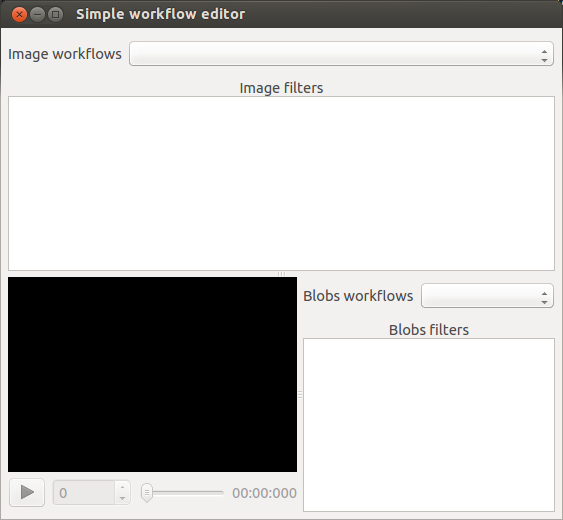

Dialogs¶
Filters dialog¶
API¶
-
class
mcvgui.dialogs.simple_filter.SimpleFilter(parent=None, video=None)[source]¶ It implements a dialog that allow the user to choose several combinations of filters and apply them to a video. The player allow the user to pre visualize the result.
-
blobs_filters¶ Set and retrieve the selected list of blobs filters
-
image_filters¶ Set and retrieve the selected list of image filters
-
video_capture¶ Set and retrieve the video for previsualization. The value should be from type cv2.VideoCapture or a path to a video file.
-